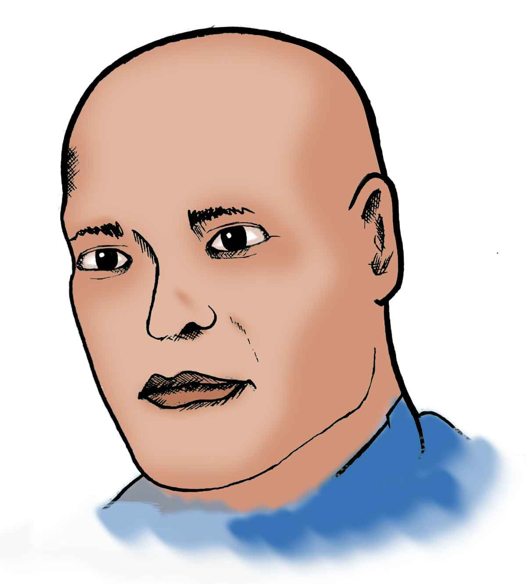

Kulbushan Yadav’s verdict by International Court of Justice: Which side won what.
On 17th July 2019, International Court of Justice or ICJ announced its final Verdict on the case of Kulbushan Yadav, a serving Indian Navy official which Pakistan accused of funding terror groups in the province of Baluchistan via Iran and Afghanistan.
WRITTEN BY SHAHNASEEB BABAR
GRAPHICS BY SAQIB ALI
Before we dig into the Verdict, here is the background of the case:
[1] Commander Kulbushan Yadav was arrested on 3rd March 2017 in the province of Baluchistan right next to the International border of Pakistan with Iran. Commander Kulbushan was carrying a fake passport on his name. His arrest was strongly protested by the Foreign Office of India which claimed an Indian national to be arrested by Pakistani authorities.
[2] On 10th April 2017, Commander Jadhav was sentenced to death by a Field General Court Martial (FGCM) in Pakistan on the charges of Espionage and Terrorism.
[3] Confession video of Kulbushan Yadav was aired by the media wing of Pakistan Army in which Commander Yadav accepted the charges of supporting Baloch separatists in Pakistan, he stated:
[4] In May 2017, India approached the International Court of Justice (ICJ) asserting that Pakistani authorities were denying India its right of consular access to Jadhav in violation of Vienna Convention (Vienna Convention on Consular Relations - Wikipedia).

As the Verdict was announced on 17th July 2019 It appeared both sides India and Pakistan claimed victory. However none of the sides can be fully taken as victorious. We can break that down in Two Parts: What did India demand from ICJ and what India won? What Pakistan won?
[A] What India Demanded and What India won:
ICJ: Denied, military courts conviction and sentence were not in violation.
However, Pakistan’s consular access was declared in violation of International Law.
ICJ: Denied.
ICJ: Denied.
ICJ: Denied.
ICJ: The international court of Justice granted Review and Reconsideration by a mean’s of Pakistan’s own choosing.
[B] What Pakistan won?
[2] The court did not accept India’s request for release.
[3] His Judicial review will be done by Pakistan’s court system.
[4] The death sentence of Commander Yadav still stands.
[5] Councilor access can be denied by Pakistan by the 2008 agreement.
[6] Espionage and Terrorism charges not dropped.
The author writes on Quora at Shahnaseeb Babar.